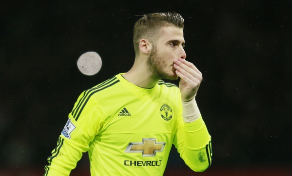

El mercado invernal de fichajes está a punto de cerrarse. El próximo 1 de febrero se pondrá final a un periodo de mercado en el que, salvo sorpresas, el Real Madrid no tiene previsto realizar grandes movimientos. Los más importantes se producirán, como suele ser normal, el verano que viene. Eso, siempre y cuando se permita a los blancos fichar, bien porque FIFA atienda el primer recurso a su sanción, bien porque el TAS (Tribunal de Arbitraje Deportivo) le conceda una cautelar. En tal caso, los blancos tienen ya casi atado la llegada definitiva de David de Gea. Además, los blancos se centrarán en la llegada de Hazard como máximo objetivo, aunque siguen sin descartar las incorporaciones de Neymar y Lewandowski.
Así lo ha desvelado Eduardo Inda en El Chiringuito de Mega. El director de OKDiario.com ha hecho públicos los movimientos merengues en el caso de que el próximo verano pueda acometer fichajes.
"De Gea está ya muy avanzado y Hazard es el objetivo número uno de Zidane para el año que viene si el Real Madrid puede fichar, además de Neymar. No hay que descartar lo de Lewandowski, pero en su caso choca con la protección a Benzema, porque si viene Lewandowski se tiene que ir Benzema. Sería solo en caso de una eventualidad con la justicia de Karim", dijo el colaborador de El Chiringuito.
Además, Eduardo Inda explicó con más detalle la situación de Neymar. "El Real Madrid dispone inmediatamente de unos 180 millones de euros. La situación deportiva ahora mismo no es envidiable, pero la económica sí. El Barcelona va a tener que pagar más de 200 millones de euros y la cláusula es de 190 millones. Tiene que ingresar esa cantidad para poder solucionar el problema que tiene".
Por otro lado, el colaborador de El Chiringuito aseguró que la directiva del Real Madrid no se esperaba para nada el empate ante el Betis y ha despertado cierta inquietud. "Se ve al equipo mejor, pero hay cierta preocupación por el empate porque el equipo fue incapaz de ganar al Betis".